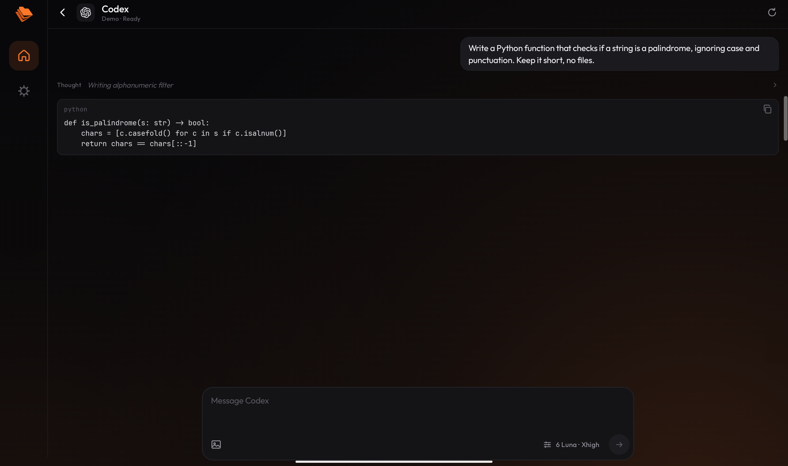
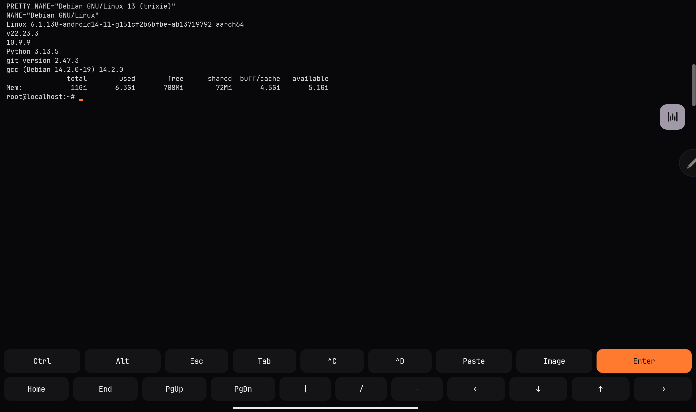
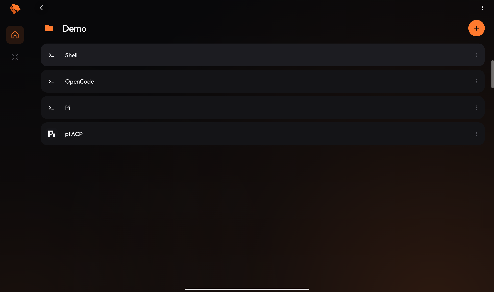

A Linux terminal and coding agents on your Android tablet
Origin Studio is an Android app that runs a real Debian system. You can use git, Node, Python and tools like Claude Code and Codex on a tablet, without a laptop and without root. The same workspace also opens on any screen through a zero-build companion.
Download the APK Android 8 or newer
Free, Apache-2.0. Also on Obtainium, and it can update itself.

what it is
I wanted to code on a tablet with a keyboard. On Android that usually means a terminal app, a pile of proot scripts, and package installs that break halfway through. Origin Studio bundles Debian 13 and does that setup once, so apt, git, Node 22, Python and gcc work after the first launch.
Your projects live inside that Linux system, so symlinks, permissions and npm behave the way they do on a PC. Agents install themselves the first time you type their name: claude, codex, gemini, opencode, pi or qwen. Several of them also get a proper chat screen instead of a terminal, through the Agent Client Protocol.
local and remote
The device stays in charge. Every project is plain files with a small, versioned manifest and a hash-chained history, so it opens without this app. Reading, editing, running local tools and exporting work offline, with no account and no vendor service.
When you want more machine than a tablet, the same workspace can run on a host you already own: a laptop, a home server, a small VPS. Both sides speak one protocol, origin.host/v1. The host must disclose who operates it, where it is, how isolated it is, what it retains, what it costs and which capabilities it offers — before you use it. Remote execution is opt-in, and a failure is shown rather than quietly retried somewhere else.
The reference host ships in the repository, has no dependencies, and is small enough to read: hosts/hub. The rules are in the dual-mode notes, and the binding text is the Constitution.
anywhere
v0.0.10 adds a Studio tab: choose Debian on the phone or Dakota OS on a paired host, pick the agent new sessions start with, watch a device-local prompt budget, schedule commands as real shell sessions, and switch between five premium finishes. Press Ctrl/Cmd+K to jump to any workspace, session, environment, agent or action.
The workspace also reaches past the tablet. A zero-build companion is plain HTML, CSS and JavaScript: the host serves it, or you unzip it on any static server and install it to a home screen. It lists workspaces, verifies the hash-chained history, creates checkpoints and runs health checks. It has no framework, no account and no telemetry.
The origin CLI is one dependency-free Node file. It creates, verifies, lists, checkpoints and serves workspaces on a laptop, a home server or a small VPS, and it imports the reference host's own verification code, so a workspace made there opens unchanged in the app.
npx github:OriginLabs1/OriginStudio serve --root ~/origin
Inside the app, a new Fleet tab shows every session on the device, grouped by project, with honest live state and one tap to open. The release also ships a CycloneDX SBOM beside the signed APK, the companion zip and the CLI tarball. The full workflow is in the universal notes.
also in the box
- A file manager and a code editor. You can send files into a project from any app, and export them out again.
- PDF previews with page navigation and Markdown previews with an outline. Drag files or images onto the chat, attach any text file, or dictate a prompt.
- A browser next to the chat. Agents can open a page, click, fill in forms and take screenshots to check their own work. The snapshots they get are kept short on purpose, so they do not burn tokens.
- A key row for Ctrl, Esc and the arrows, and a floating bubble that keeps your session one tap away while you are in another app.
- Updates from Settings: it checks GitHub, verifies the checksum and signature, then hands the APK to Android's installer.
screenshots


install
- Download the APK from the releases page and open it. Android asks once to allow installs from your browser.
- Or add
github.com/OriginLabs1/OriginStudioto Obtainium and it keeps the app up to date. - Open Origin Studio. The first start unpacks Debian, which takes a few seconds. The first shell then downloads the developer tools, a few hundred MB, so you need internet once.
- On a laptop or a second screen, run
npx github:OriginLabs1/OriginStudio serve --root ~/originand open the host address. The companion is already there.
You need Android 8 or newer, a 64-bit ARM or x86_64 device, and a few GB free.
what doesn't work
- It is not on Google Play. The app updates itself and downloads developer tools, which Play's policies restrict, and it still targets Android 9, which Play no longer accepts. Newer targets look workable; the notes are here.
- It is not on F-Droid yet. F-Droid wants every binary built from source, and the PRoot binaries come from Termux's packages. There is an issue if you want to help.
- It is PRoot, not a virtual machine: no systemd, no kernel modules, no raw sockets.
- Google's Antigravity chat server needs more address space than Android gives apps, so only its command line works.
- You bring your own account or API key for each agent.
how it works
Getting Linux to run inside an app took five workarounds, for things like Android refusing to execute files from app storage and blocking hard links. I wrote them up in How Origin Studio runs Debian on Android without root. The source is on GitHub.
questions
- Do I need root?
- No. It is an ordinary app. Nothing on your device is modified.
- Does it work on a phone?
- Yes, the layout adapts, but it is built for a tablet with a keyboard, where the chat, files and terminal can sit side by side.
- How is it different from Termux?
- Termux is a general terminal and does much more. Origin Studio does one thing: coding with agents on a tablet. It brings its own Debian, a chat view for agents, a file manager, an editor and a browser, with the setup done for you.
- Is an APK from GitHub safe to install?
- Each release lists a SHA-256 checksum and the source is public. The in-app updater checks both the checksum and the signing key before it passes a file to Android.